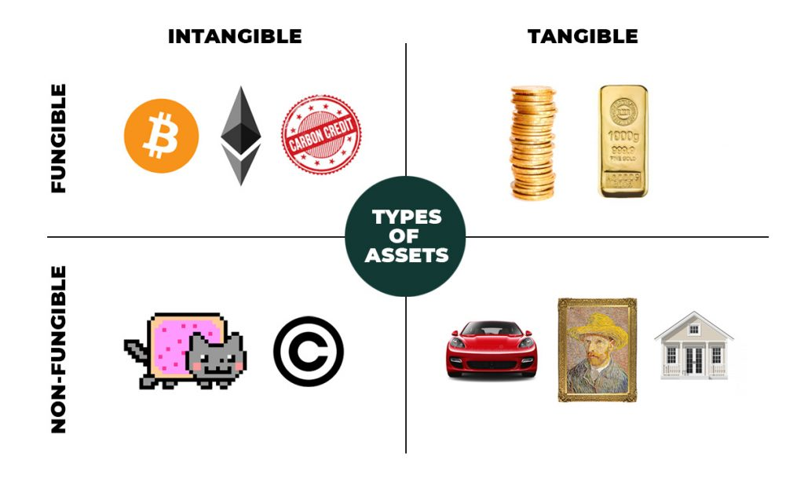

10/03/2021
NFT - ¡Comprame el JPG!
¿Qué significa NFT?
Non Fungible Token (token no fungible).
¿Qué significa fungible?
Algo fungible es cualquier cosa que se gasta, que se deterioran con el uso, y que cuando
pasa esto
puede ser reemplazado por otro igual que cumple la misma función. Un ejemplo de algo
fungible
podría ser un iphone. Un iphone es un dispositivo igual a otros, que al volverse obsoleto, o
al
romperse, o lo que sea lo podés reemplazar por otro igual. Otro ejemplo de bien fungible es
tan
cercano como el dinero, un billete de un dólar es un bien fungible, se puede gastar y
reemplazarlo
en otro momento por otro billete de un dólar que vale lo mismo y representa lo mismo. Por el
contrario, un bien no fungible, es lo que estás pensando, lo contrario, algo único y
que no se
puede gastar. Algunos ejemplos podrían ser la Mona Lisa que está en el Museo del
Louvre es un
elemento no fungible, el David de Miguel Angel, la guitarra de Joan Jett, el bajo de Roger
Waters,
el piano de Elton John, todos estos son elementos no fungibles, son únicos, no hay dos
iguales. En
el caso de las obras de Arte se percibe con facilidad, porque se entiende fácil lo
único de su
existencia, aunque hay jpeg de la mona lisa, o se vendan posters, sigue siendo solo una la
original,
y el peso de ser la original es aquello que la diferencia del resto por ende es lo que le dá
valor.
Ser
original y única. Lo mismo aplica a todo lo demás. Hay miles de bajos del mismo modelo
que usa Roger
Waters, pero si uno obtiene el que le perteneció a Waters hace de ese bajo algo único,
y ese valor
agregado lo destaca de todos los demás.
Es en este momento que entra en juego algo importante como es que el valor que lo diferencia
de todo
lo demás es porque aceptamos que algo le da ese valor que lo destaca del resto, hay un
consenso de
que algo vale tanto por X motivo, pero sin ese factor X, en este caso que el bajo le
perteneció a
Roger Waters, solo es otro bajo de miles. Es importante tener en mente eso, las cosas tienen
el
valor que el consenso general, que el mercado, le da.

¿Qué es una NFT?
Ya sabemos qué significa esto de ser fungible o no fungible, pero ¿la parte de token?
Ahora es cuando comienza la cuestión. El token no fungible, es un token criptográfico
¿y eso con qué
se come? Eso significa que se nutre de la misma tecnología con la que funcionan las
criptomonedas,
la blockchain.
¿Cómo funcionan?
Funcionan principalmente sobre la blockchain de Ethereum (es otra criptomoneda) aunque
también hay
otras que comienzan a usarse para NFT. Así también toda transacción que se
realice con ese NFT va a
continuar generando ganancias al creador original.
¿Qué es el criptoarte?
Es hacer NFT con piezas de arte, es eso básicamente, pero algo tan simple provocó
cosas como que el
artistaa Beeple haya vendido una pieza por casi 70 millones de dolares, hay NFT’s basados en
el Nyan
Cat que se vendieron por seiscientos mil dólares.
En otro ámbito el músico Mike Shinoda (Linkin Park) vendió un single a
través de una subasta NFT, el
mismo se vendió por unos seis mil dolares.
Se entiende que quien compró ese single, básicamente compró un autógrafo
en forma de mp3, o la pieza
de arte se puede hacer un “botón derecho, guardar como” y ya tengo ese arte para usarlo de
fondo de
escritorio. Pero el valor del NFT pasa por el acuerdo entre el creador y el comprador (sea
un
fanatico o un inversor) de que no van a crearse más copias de ese NFT, si se mantiene como
único no
solo no va a perder valor, sino que él mismo va a crecer con el tiempo. Si el creador del
NFT
crea
más NFT de lo mismo le quitaría valor a la pieza original, por eso es que termina
siendo una suerte
de acuerdo entre las partes que deciden que algo tiene valor porque así lo deciden y el
contexto lo
respalda.
¿Medio Ambiente?
Otra cuestión es el medio ambiente. ¿pór qué? porque para realizar las
transacciones de la blockchain,
cuando se comunica con los nodos, es cuando se produce el minado, el mismo es una
competencia entre
nodos para determinar cual va a encargarse de llevar adelante la transacción y que como
premio se
lleva criptomonedas (hay granjas de servidores dedicadas a esto, en otro tiempo era posible
minar
con una computadora hogareña). Para determinar quien gana se hace lo que se llama una prueba
de
trabajo que es un calculo matemático que aumenta su complejidad conforme pasa el tiempo y
crece la
blockchain. Para poder realizarlo los nodos compiten haciendo uso del poder de placas de
videos, de
muchas placas de video (que haya habido noticias de que había escasez y que los precios de
las
mismas se disparen podría estar asociado a las granjas de minería) que son llevadas al
límite para
ganar esa prueba de trabajo y realizar la transacción. Pero en el interín tanto
esfuerzo de las
placas genera calor, y más allá de eso se consumen grandes cantidades de electricidad.
Y muchos
nodos de la red gastaran electricidad y finalmente no ganaran nada, generando solamente
grandes
consumos de electricidad (a veces superiores a las de países enteros). Se habla de que toda
la
infraestructura de blockchain corra usando energía renovable, pero la clave pasaría
por dejar de
lado esa “prueba de trabajo” (proof of work) por una “prueba de participación” (proof of
stake). La
prueba de participación sería una suerte de sorteo, de lotería, entre los
nodos. Dependiendo de las
características de cada nodo aumentaron los “números” de ese nodo al participar. Eso
ayudaría más,
pero sin importar como se lo vea, cualquiera de estas pruebas favorecen (al minar) a los que
ya son
ricos al poseer las granjas dedicadas a esta tarea.